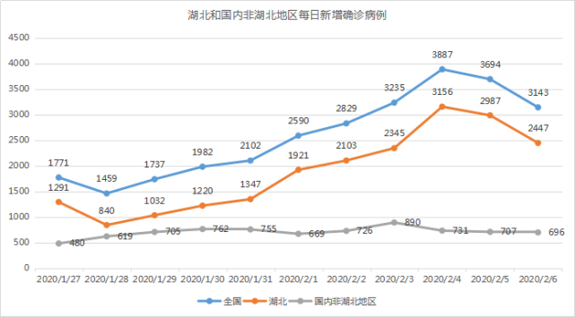
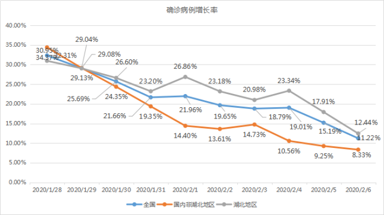
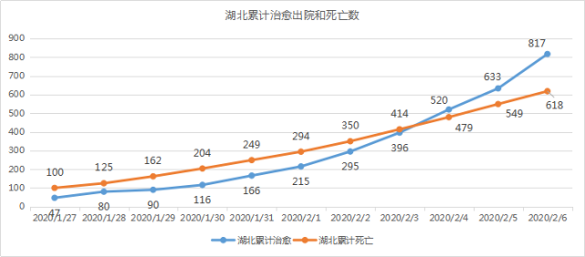
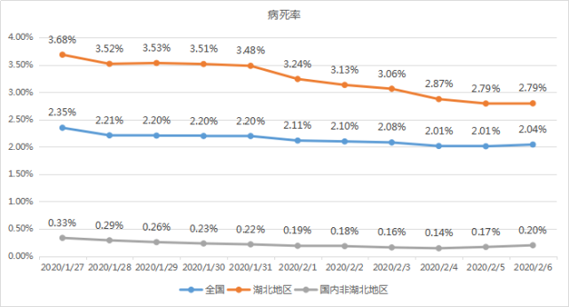

病死率逐渐下降，会出现转机么？
原文链接 备份链接 制图 |《财经》视觉中心 根据国家卫健委消息，截至2月6日24时，31个省（自治区、直辖市）和新疆生产建设兵团累计报告确诊病例31161例，累计治愈出院1540例，现有确诊病例28985例（其中重症病例4821例）， …


图/法新
文 | 徐进
1、 今日概况：
根据国家卫健委消息，截至2月6日24时，31个省（自治区、直辖市）和新疆生产建设兵团累计报告确诊病例31161例，累计治愈出院1540例，现有确诊病例28985例（其中重症病例4821例），累计死亡病例636例，现有疑似病例26359例。累计追踪到密切接触者314028人，尚在医学观察的密切接触者186045人。累计收到港澳台地区通报确诊病例50例，其中香港死亡病例1例。

2、新增确诊病例数继续下降
湖北新增确诊病例数已经是连续两天下降。考虑到其正在全力消化此前积累的未收、未检病例，这个结果难能可贵。非湖北地区连续三天平稳，这或许意味着非湖北地区正在接受病毒二代传播的考验。

3、确诊病例增长率继续下降
有网友认为增长率受基数大幅增加影响，不能说明问题。其实增长率的变动率恰恰是预测趋势的重要参数，基数大了反而更加可靠。增长率究竟增长还是下降会带来质的差别。湖北的增长率继续下行让我们看到希望。这意味着确诊病例翻倍的时间从前一阶段的3、4天可望延长到一周以上。非湖北地区的病例翻倍时间则将延长到10天以上。

4、待排查疑似病例存量微涨

5、密切接触者追踪力度和存量
这个追踪系数可以直观理解为平均每一个确诊病例会追踪到多少人。不难看出非湖北地区追踪力度远远大于湖北。我们对非湖北地区的防控增强了信心，也感受到湖北面临的各种压力。同时我们也看到尚在追踪观察者数已经趋于平稳。这个存量数据同样是一个趋稳的信号。

注：密切接触者追踪系数=每日追踪的密切接触者增量/每日新增确诊病例数

6、治愈人数远超病死人数
累计治愈出院人数与病死人数继续拉大差距。湖北也在三天前实现治愈人数反超病死人数后继续向好。



小结：小编多句嘴，人们通常认为拐点在山顶，但数学定义的拐点其实在山腰。先有山腰的拐点才会有山顶。这里我们采用常识用语来使用“拐点”。所以现在只说疫情增势趋缓，让我们期待数据进一步明确。同胞们，加油！

▲点击图片查看更多疫情报道
责编 | 黄端 duanhuang@caijing.com.cn
本文为《财经》杂志原创文章，未经授权不得转载或建立镜像。如需转载，请在文末留言申请并获取授权。
原文链接 备份链接 制图 |《财经》视觉中心 根据国家卫健委消息，截至2月6日24时，31个省（自治区、直辖市）和新疆生产建设兵团累计报告确诊病例31161例，累计治愈出院1540例，现有确诊病例28985例（其中重症病例4821例）， …
原文链接 备份链接 图/法新 文 | 徐进 是的！好转迹象就藏在数据更新中。据国家和湖北省卫健委公布的数据，截止到2月5日24时，有关数据分析如下： 1、新增确诊病例数由陡增转为下降 其中湖北新增确诊病例数结束连续一周的“步步高”由升转降 …
原文链接 备份链接 记者 | 童兰 截至2月3日24时，新型冠状病毒肺炎疫情目前已经导致了425人死亡和20438例确诊感染，而且仍在不断攀升。作为最易感染的人群之一，密切接触者追踪力度的加强和人数的增长，暗示了未来感染人数增加的压力。 …
原文链接 备份链接 她反复确认我们工作人员的身份，就是不提供自己的信息，打了几次后来就不接了。 口述 | 郭翔 整理 | 王仲昀 我是上海市疾控中心的一名工作人员，原来在免疫规划所工作。新冠肺炎暴发后，中心成立了“追踪办”，我和另外23 …
原文链接 备份链接 *************▲*************2020年1月31日，温州某商业街，店铺都关闭了。（南方周末记者 王华震/图） 全文共*3424*字，阅读大约需要8分钟。 截至2月4日12点，温州确诊新冠肺炎 …